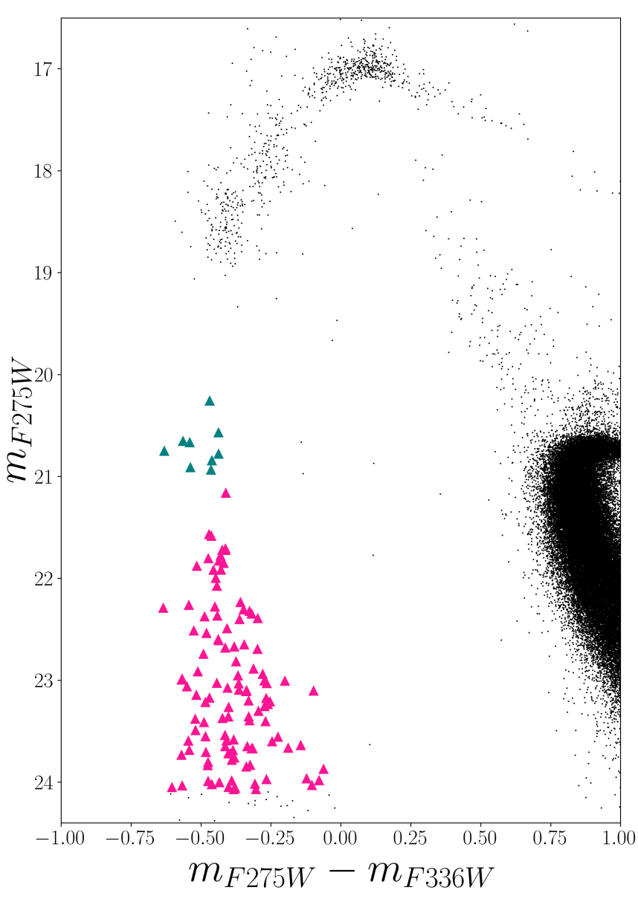

A Stellar Murder Investigation: Where are the corpses?
A brief description of my undergraduate thesis (link)
NGC2808 is a very intriguing and unusual galactic globular cluster that purportedly has undergone more than one episode of star formation, hosting distinct stellar subpopulations. Our study focused on the identification of various types of WDs - e.g. ones with a core composed of carbon and oxygen (CO-core) and ones with a core composition of helium (He-core). This study is crucial for understanding the formation scenario of He-core WDs, which remains elusive and could depend on factors like binarity, cluster mass, etc. This is needed to understand the formation scenario of He-core WDs since such stars supposedly form through binary interactions for the Universe’s ∼ 13 billion year history.
For this study, we used the photometric catalog, reduced using Method 3, from the HUG Survey (openly accessible from the Milkulski Space Archrive for Telescopes) to study white dwarf (WD) stars in the cluster. The catalog provided magnitude of stars in F275W, F336W, F438W, F616W and F814W filters. Using various combinations of filters, color-magnitude diagrams were plotted. But only the UV and Optical filters were primarily used since WDs are faint objects.
Theoretical models including isochrones, evolutionary tracks and WD cooling models were plotted to perform star counts and crossing time analysis of main sequence turnoff (MSTO), red giant branch (RGB) and WD stars.
The comparison of WD, MSTO and RGB star counts and crossing times suggested that the WD sequence primarily contains CO-core WDs. However, with the only He-core WD cooling model that was fit, it is suggestive that NGC2808 may not host He-core WDs. A bimodality analysis of the WD sequence (up to 24 magnitudes in UV) did not indicate any redder sequence corresponding to He-core WDs, as was discovered in the globular cluster Omega Centauri. This was contrary to our expectations since NGC2808 is a massive Globular Cluster. It is possible that the number of He-core WDs is smaller in fraction and mixed with the CO WD sequence or is fainter and redder than the limits analyzed in this study.
Further studies, including fitting more He-core models and analyzing deeper photometric data of NGC2808, could help conclude.
Figure illustrates the method implemented to count MSTO stars and calculating crossing times.
Figure 2: Pink and teal-coloured triangles are White Dwarf stars.